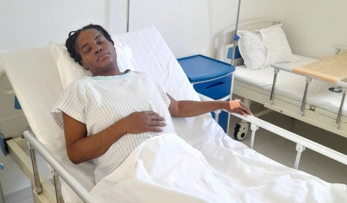

Me ajuda a salvar a minha vida e da minha bebé
ID: 6026620
Vaquinha criada em: 25/03/2026
Eu nunca imaginei que chegaria a este ponto da minha vida…Sou uma mulher de 35 anos, mãe, e estou vivendo uma das fases mais difíceis e assustadoras da minha história. A minha gravidez, que deveria ser um momento de alegria, transformou-se numa luta diária pela sobrevivência.
Fui diagnosticada com uma gestação de alto risco. Cada dia é uma incerteza. Cada dor, cada sinal, traz medo. Os médicos foram claros: posso precisar de uma cesariana de emergência a qualquer momento para salvar a minha vida e a do meu bebê.
O mais doloroso não é apenas o risco…É não ter condições financeiras para garantir o tratamento que pode nos salvar. Já passei por momentos de desespero, de chorar em silêncio, de não saber o que fazer. Houve um momento em que precisei de ajuda urgente e, graças a uma clínica que teve compaixão de mim, consegui ser atendida. Mas hoje carrego uma dívida que não tenho como pagar.
Sou uma mãe que só quer viver…Só quer ver seu filho crescer…Só quer ter a chance de cuidar do seu bebê. Mas sozinha… eu não consigo. É muito difícil estar aqui a pedir ajuda. Mas a verdade é que preciso de apoio para:
- Custear despesas médicas urgentes
- Pagar a dívida hospitalar
- Garantir segurança para mim e para o meu bebê
Qualquer contribuição, por menor que seja, pode fazer a diferença entre o desespero e a esperança. Se você não puder ajudar financeiramente, por favor, partilhe esta campanha. Às vezes, a pessoa certa só precisa ver esta mensagem.
Hoje, eu coloco minha vida nas mãos de Deus…E na solidariedade de pessoas de bom coração. Com lágrimas nos olhos, mas ainda com esperança, Muito obrigada